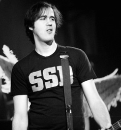

Krist Novoselic

Early life
Krist Anthony Novoselic was born in Compton, California, on May 16, 1965, the son of Croatian immigrants Kristo and Marija Novoselić. Kristo was a native of Veli Iž on the island of Iž while Marija originates from Privlaka. Novoselic lived in Compton for one year before his parents moved to the ethnically Croatian Los Angeles neighborhood of San Pedro, where he remained for most of his childhood. He has a younger brother, Robert (born 1968), and a younger sister, Diana (born 1973). In 1971, his family relocated to Aberdeen, Washington due to surging real estate costs in California. In 1975, his parents sent him to live with relatives in Durban, South Africa. He returned to Aberdeen in 1982. He is partially fluent in Croatian. His earliest memory of listening to music is listening to Chuck Berry with his father. Growing up, he had a severe underbite, for which he underwent corrective surgery.
Novoselic was already interested in bands such as Led Zeppelin, Black Sabbath, The Who, Van Halen, Devo, and Aerosmith. He also enjoyed listening to Yugoslavian bands such as Zabranjeno Pušenje, Prljavo kazalište, and Azra. While in Yugoslavia, he picked up an interest in punk rock, and discovered bands such as the Sex Pistols and Ramones when he lived in Croatia at the age of 14 for one year. He has cited Paul McCartney, Geezer Butler, John Entwistle, and Gene Simmons as the fundamental influences of his bass playing.
Novoselic's brother Robert introduced him to his friend Kurt Cobain, who had noticed loud music coming from upstairs. Robert told Cobain that it was his older brother, who listened to punk rock. Cobain eventually befriended the older Novoselic, as the pair ended up sharing similar musical tastes, including a fondness for local band Melvins. The two had several mutual friends and began hanging out shortly thereafter. Krist attended Aberdeen High School and Kurt attended Montesano High School (Washington). At one point, Cobain gave Novoselic a demo tape of his former band Fecal Matter, and asked him to form a band together. After several months, Novoselic finally listened to the tape, liked it, and agreed to start a band with Cobain. After high school, Novoselic worked as a painter and decorator but was eventually laid off.(...)